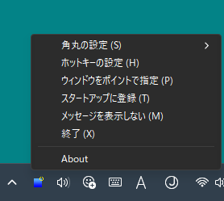

このソフトとは？
Windows 11で四隅が丸くなったウィンドウを四角に戻すソフト。
ウィンドウの下部の両端が見切れてしまう場合などに便利
起動するとタスクトレイに常駐し、設定されたホットキーを押すと、現在のアクティブウィンドウを角丸から四角に変更することが可能。
タスクトレイの右クリックメニューの「角丸の設定」の3種類の項目から、角丸ウィンドウの設定が変更もできる。

角丸で下部の両端が見えない状態を改善
SQUARING CORNERの右クリックメニュー
